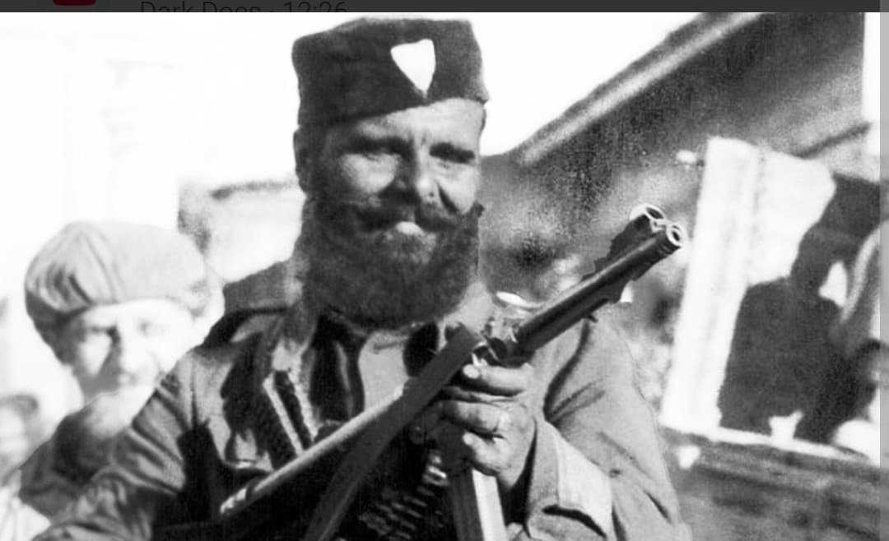
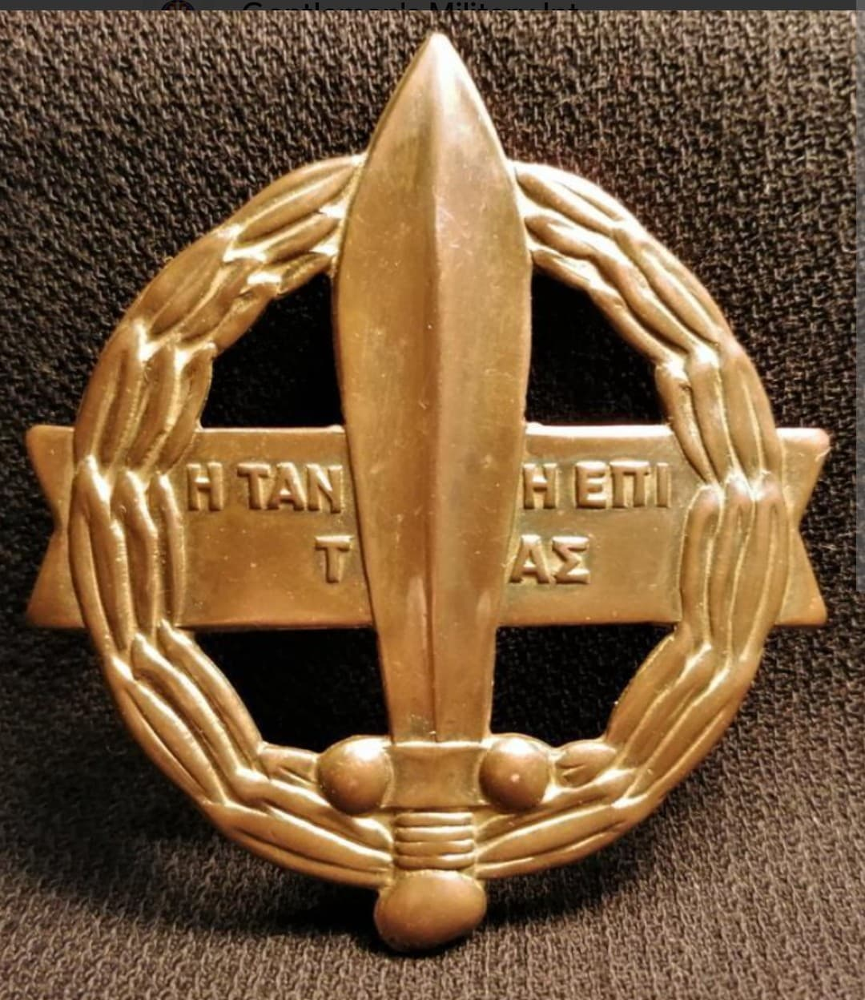
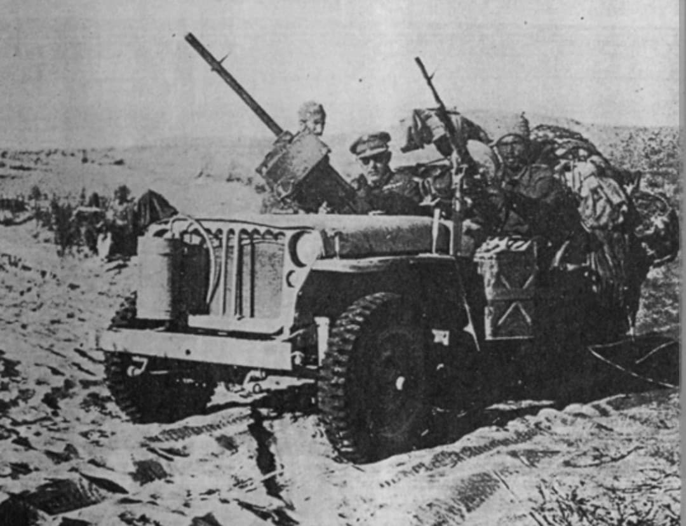

La flamme de la résistance hellène : des commandos d'élite aux côtés du SAS et du LRDG dans le désert et les îles de la mer Égée

Le Sacred Band (en grec : Ιερός Λόχος, ou Bataillon Sacré) est une unité militaire d'élite entièrement constituée d'officiers et de volontaires grecs qui ont refusé la capitulation de leur pays en 1941.
Inspirée par l'illustre unité antique de Thèbes, cette force spéciale s'est distinguée par son panache, sa bravoure et son efficacité redoutable, combattant aux côtés des forces britanniques et du SAS en Afrique du Nord, en Tunisie, puis libérant les îles de la mer Égée jusqu'à la fin du conflit.
Après l'invasion de la Grèce par l'Axe au printemps 1941, de nombreux officiers grecs réussissent à s'échapper vers le Moyen-Orient. Sous l'impulsion du colonel **Christodoulos Tsigantes**, ils demandent à former une unité indépendante pour continuer la lutte.
Officiellement créé en septembre 1942 au camp de Palestine, le Bataillon Sacré est rapidement intégré aux opérations spéciales alliées en raison de la détermination farouche de ses membres, qui ne portent au départ que des grades d'officiers pour témoigner de leur statut d'élite.

Dès sa formation, le Bataillon Sacré est rattaché aux célèbres services de reconnaissance alliés (*Long Range Desert Group* - LRDG) et au SAS. Ses commandos participent à des patrouilles d'infiltration profondes et à des sabotages derrière les lignes germano-italiennes en Égypte et en Libye.
En 1943, intégrés à la 1ère armée britannique en Tunisie, ils mènent des assauts de choc remarqués contre les positions ennemies dans les montagnes tunisiennes, capturant des centaines de prisonniers et gagnant le respect unanime de leurs alliés britanniques et français.

Entre 1943 et 1945, la principale mission du Bataillon Sacré devient la libération des îles grecques de la mer Égée (dont Samos, Leros, Milos et Rhodes) occupées par des garnisons allemandes.
Opérant en commandos amphibies et en liaison avec les patriotes locaux, ils nettoient l'archipel avant d'être parmi les tout premiers libérateurs à entrer triomphalement à Athènes et à hisser le drapeau national sur l'Acropole. L'unité est dissoute avec les honneurs suprêmes en août 1945.
Page du Musée HOP WW2 – Section Unités & Divisions